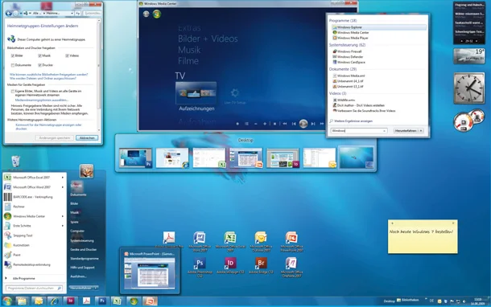
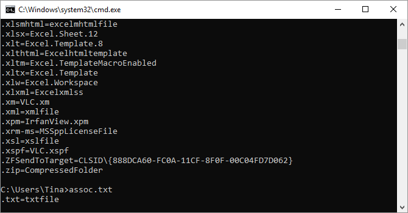
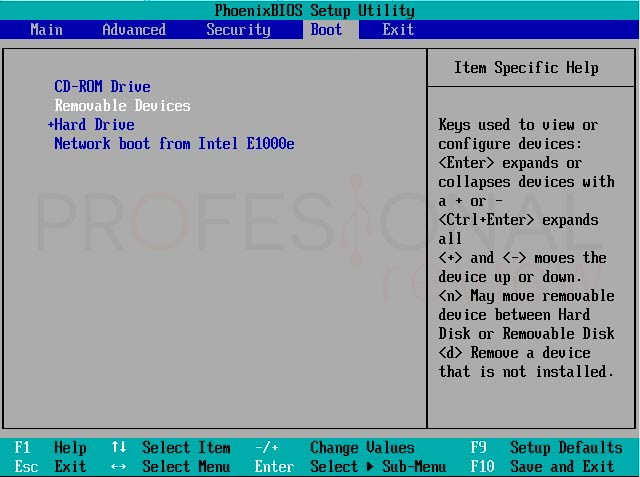

- En Laboratorio de S.O aprendemos todo lo relacionado al software de la computadora, es decir, la parte no tangible de la misma. Aprendemos sobre el Sistema Operativo en si, que es el software principal que se encarga de controlar el hardware de manera eficiente. Dentro del S.O hay diversas aplicaciones, y podemos interactuar gracias a la interfaz gráfica (GUI) que ofrecen los sistemas operativos.
- Aprendemos a diferenciar los distintos tipos de software. También hablamos sobre el malware, los famosos "virus" y de como prevenirlos.
- Aprendemos sobre la línea de comandos, que es la manera mas primitiva de comunicarse con el sistema operativo, ya que no se usa el sistema de ventanas. Se ve como las demás páginas, y la que están viendo ahora tiene una ventanita
 
- Aprendemos también a instalar el sistema operativo en una computadora para que esta pueda funcionar.
- Aprendemos sobre el uso de máquinas virtuales, que es una aplicación que nos permite usar un sistema operativo dentro de otro.